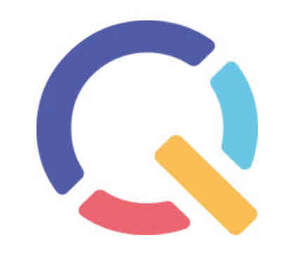
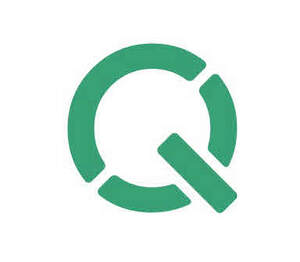
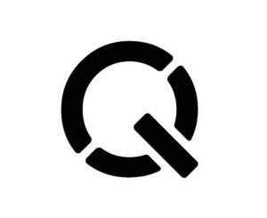
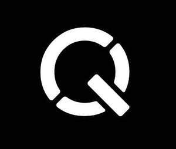
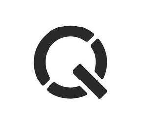

Trade Mark Journal No.2025/050 12 December 2025
UK00004302601 28 November 2025 (9,41,42)
Mark 1

Mark 2

Mark 3

Mark 4

Mark 5

- Class 9
- Software; Software for computers, tablets, mobile devices, or electronic devices in the field of student safety and wellbeing; Educational Technology Software; Education software; Parental control software; Cyber safety software; Student software; Student software for computers, tablets, mobile devices, or electronic devices in the field of student safety and wellbeing; Filtering and monitoring software; Filtering and monitoring software for educational institution; Privacy protection software; Classroom management software; Children's educational software; Computer software concerned with children's education; Computer software for education; Educational computer software; Middleware for management of software functions on electronic devices; Access control devices; Access control software; Downloadable computer security software; Downloadable computer software for remote monitoring and analysis; Security software; System and system support software, and firmware; Content control software; Software for network and device security; Downloadable and recorded software for computers, tablets, mobile devices, and electronic devices for managing security settings in the field of student safety and wellbeing; Downloadable and recorded educational technology software for computers, tablets, mobile devices, or electronic devices for providing instruction in the field of student safety and wellbeing; Downloadable and recorded education software for computers, tablets, mobile devices, or electronic devices for providing instruction in the field of student safety and wellbeing; Downloadable and recorded parental control software for computers, tablets, mobile devices, or electronic devices for managing security settings in the field of student safety and wellbeing; Downloadable and recorded cyber safety software for computers, tablets, mobile devices, or electronic devices, in the field of student safety and wellbeing; Downloadable and recorded student software for computers, tablets, mobile devices, or electronic devices for managing security settings in the field of student safety and wellbeing; Downloadable and recorded filtering and monitoring software for cyber security; Downloadable and recorded filtering and monitoring software for cyber security for educational institution; Downloadable and recorded privacy protection software; Downloadable and recorded classroom management software; Downloadable and recorded children's educational software; Downloadable and recorded computer software concerned with children's education for cyber security; Downloadable and recorded computer software for education by providing instruction in the field of student safety and wellbeing; Downloadable and recorded educational computer software featuring instruction in the field of student safety and wellbeing; Downloadable and recorded middleware for management of software functions on electronic devices; Access control devices, namely, computer access control devices in the nature of tablet computers, touch pads, fingerprint scanners, and biometric scanners; Downloadable and recorded access control software for computers, tablets, mobile devices, or electronic devices, in the field of student safety and wellbeing; downloadable computer security software for managing access to devices, for securing against cyber attacks, and for securing personal data; downloadable computer software for remote security monitoring and analysis; Downloadable and recorded security software for managing access to devices, for securing against cyber attacks, and for securing personal data in the field of student safety and wellbeing; Downloadable and recorded system and system support software and firmware for application and database integration; Downloadable and recorded content control software for devices, or electronic devices in the field of student safety and wellbeing; Downloadable and recorded software for network and device security.
- Class 41
- Education; Digital safety education; Education and training services in the field of classroom management services; Cyber safety education; Computer based educational services; Computer education training services; Education and training services in the field of digital safeguarding solutions; Education and training services; Education services; Educational consultancy; Educational services provided for teachers of children; Educational services provided for children; Educational services relating to digital safety; Educational services in relation to computer systems; Educational services in relation to online safety; Online education services; Training of school personnel to ensure digital security protection of students; Training of educational institution personnel on the use of filtering and monitoring systems and services; Education, namely, providing courses in the field of digital safety; Providing digital safety education courses; Education, namely courses and training services in the field of classroom management services; cyber safety education courses; computer based educational services, namely, providing on-line courses in the field of student safety and wellbeing; computer education training services in the field of education; education, namely, courses and training services in the field of digital safeguarding solutions; education, namely, courses and training services in the field of student safety and wellbeing; education services, namely, courses in the field of student safety and wellbeing; educational consultancy being consultation about education concerning student safety and wellbeing; educational services provided for teachers of children, namely, courses in the field of student safety and wellbeing; educational services provided for children, namely, courses in the field of student safety and wellbeing; educational services, namely, courses in the field of digital safety; educational services, namely, courses in the field of computer systems; educational services, namely, courses in the field of online safety; online education services, namely, providing on-line courses in the field of student safety and wellbeing; training of school personnel in the field of digital security protection of students; training of educational institution personnel on the use of filtering and monitoring of technological systems and services. .
- Class 42
- Computer services; Computer services, being internet security services; Computer services, namely, providing virtual and non-virtual application servers to others in the field of education; Educational Technology Services; Educational technology services, namely, providing virtual and non-virtual applications servers to others in the field of education; Classroom management software services; Classroom management software services, being the provision of temporary non-downloadable computer software; Parental control software services; Parental control software services, being in the nature of computer security services; Cyber safety software services; Cyber safety software services, being in the nature of computer programming and software design in the field of cyber safety; Hosting services, software as a service, and rental of software; Hosting services, software as a service (SaaS) featuring software for use in classroom management, and rental of software; Monitoring of computer systems for security purposes; Computer and information technology consultancy services; Computer security system monitoring services; Computer security services for the protection against illegal network access; Computer security consultancy; Consultancy in the field of computer security; Consultancy in the field of security software; Data security services [firewalls]; Design and development of Internet security program; Hosting multimedia educational content; Internet Security consultancy; IT consultancy, advisory and information services; IT Services; Information technology (IT) services relating to the installation, maintenance and repair of software; Programming of educational software; Programming of Internet security programs; Provision of computer security risk management programs; Rental of Internet security programs; Software development, programming and implementation; IT filtering and monitoring systems; IT filtering and monitoring services for educational institutions; Content control IT services; Content control IT services, in the nature of remote monitoring; Computer services, namely, providing virtual and non-virtual application servers to others in the field of education; educational technology services, namely, computer programming and software design; classroom management software services, namely, computer programming and software design in the field of classroom management software; parental control software service, namely, computer programing and software design in the field of parental control software; cyber safety software services, namely, computer programing and software design in the field of cyber safety; hosting services, namely, hosting of websites and server hosting; software as a service (SAAS) services featuring software for use in classroom management; rental of software for use in classroom management; monitoring of computer systems to detect breaches in computer security; computer technology and information technology services, namely, installation, maintenance and repair of computer software and related software consultancy services; computer security system monitoring services to detect system security breaches; computer security system monitoring services for the protection against illegal network access; computer security consultancy; consultancy in the field of computer security; technological consultancy in the field of security software; data security and firewalls, namely design and development of computer software for the creation off firewalls; data security consultancy; design and development of internet security computer program; hosting multimedia educational content, namely, providing an educational interactive web site featuring technology that allows visitors to improve student safety and wellbeing; internet security consultancy; IT consultancy, advisory and information services relating to installation, maintenance and repair of computer software; IT services, namely, installation, maintenance and repair of computer software; computer technology support services being help desk services and on-site management of information technology (IT) systems for others; programming of educational software; programming of internet security computer programs; provision of computer security risk management programs, namely, design and development of computer security risk management software and hardware; rental of internet security computer programs; software development, programming and implementation; IT filtering and monitoring systems, namely, monitoring of computer systems for detecting unauthorized access or data breach; IT filtering and monitoring services for educational institutions, namely, monitoring of computer systems for detecting unauthorized access or data breach; content control IT services, namely, monitoring, testing, analyzing, and reporting on the Internet traffic control and content control of the web sites of others; Monitoring of computer systems for detecting unauthorized access or data breach. .
Qoria Holdings Pty Ltd
Representative: Franks & Co Limited